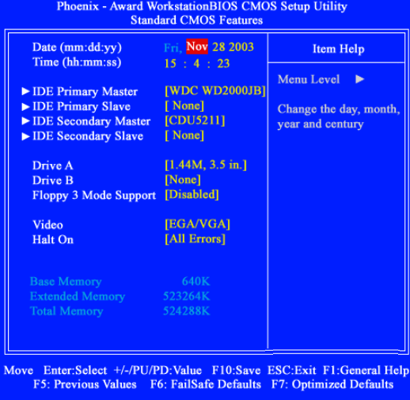

BIOS¶
La BIOS, Sistema básico de entradas y salidas, del inglés «Basic Input/Output System» es un componente esencial que se usa para controlar el hardware.
Es un pequeño programa que está grabada en un pequeño chip de memoria llamados CMOS situado en la placa base, se puede modificar a través del setup.
CMOS es una especie de memoria RAM, en ella se guardan los datos de configuración de la BIOS permitiendo modificarlos, puesto que es una memoria RAM, para evitar que estos datos se pierdan, se alimenta de una pila.
Como fabricantes de BIOS destacan Award, AMI y Phoenix.
Este programa está almacenado en una memoria localizada en la placa base, antiguamente la memoria era de tipo EPROM (ROM Erased PROgramable), actualmente se almacenan en memorias flash EEPROM (ELECTRICALLY ERASABLE PROGRAMMABLE READ-ONLY MEMORY) y la mas usada actualmente FLASH ROM, la cual puede ser regrabada sin el empleo de dispositivos de borrado. Consecuentemente, es posible actualizarla de fácilmente


{kind=link}
POST¶
Procedimientos de POST (Power-On Self Test). Verificaciones básicas.
Cuando se enciende o se restablece un sistema informático, la BIOS realiza un inventario del hardware conectado al ordenador y efectúa un diagnóstico llamado Prueba automática en el encendido (POST, Power-On Self Test) para comprobar que el equipo funciona correctamente.
La secuencia del POST pueden varíar segun el fabricante, la placa base y la versión. A continuación vemos una posible secuencia del POST:
- Test al controlador del teclado para verificar que está disponible
- Arranca la actividad del chipset
- Efectuar una prueba del procesador (CPU)
- Verificar el BIOS
- Verificar la configuración del CMOS
- Inicializar el temporizador (reloj interno)
- Inicializar el controlador de DMA
- Verificar la memoria RAM y la memoria caché
- Instalar todas las funciones del BIOS
- Verificar todas las configuraciones (unidades de disco y discos rígidos)
{kind=link}
Si en algún momento el POST encuentra un error, intentará continuar con el inicio del ordenador. Sin embargo, si el error es serio, el BIOS detendrá la carga del sistema y:
De ser posible, mostrará un mensaje en la pantalla (porque el dispositivo puede no haber sido inicializado o puede presentar fallas);
Emitirá una secuencia de sonidos que permite diagnosticar el origen del error. Esta secuencia pueden variar según el modelo de BIOS que esté instalado, un ejemplo
- 1 corto: error de refresco en la DRAM.
- 2 cortos: error de paridad de la memoria RAM
- 3 cortos: error en los primeros 64 KB de la memoria RAM.
- 4 cortos: error de reloj.
- 5 cortos: error del procesador.
- 6 cortos: error de teclado.
- 8 cortos: error en tarjeta gráfica.
- 1 pitido ni largo ni corto: como bien he dicho al inicio, este pitido indica que el POST ha concluido con éxito. La BIOS comenzará a buscar una unidad con un sistema operativo o con el instalador del mismo y lo iniciará.
Zumbador de la placa base.
Otra forma es con un código (denominado código POST) al puerto serial del ordenador, que puede recuperarse a través de hardware especial de diagnósticos. La tarjeta de diagnóstico POST:

- Cuando se encienda el ordenador comenzaran a aparecer combinaciones de teclas y números. Cada combinación indica que se está probando algún componente del equipo.
- Si no hay problemas en el display de la tarjeta aparecerá el código «00» o «FF», que significa que la computadora se encuentra lista para buscar el sistema operativo.
{kind=link}
EL SETUP¶
El SETUP es un programa configuración de la BIOS, que permite acceder a los parámetros de configuración básica que están almacenados en la memoria CMOS.
El SETUP se activa en la mayoria de los casos pulsando la tecla DEL,SUPR, F2…
{kind=link}
Un análisis de la pantalla de inicio para entrar al SETUP obtenemos que:
Es una BIOS (AWARD), el número de versión es la 6, y cumple Energy Star Este es el procesador instalado en la placa base Memoria DRAM instalada Pulsado la tecla <Supr> se entra en el SETUP
Energy Star es un programa de la Agencia de Protección Ambiental de los Estados Unidos para promover los productos eléctricos con consumo eficiente de electricidad, reduciendo de esta forma la emisión de gas de efecto invernadero por parte de las centrales eléctricas.
A través del menú principal del Setup puedes acceder a los diferentes submenús mediante los que llevarás a cabo la configuración de la BIOS

- Standard CMOS Setup: desde esta pantalla accederemos a la configuración de nuestros discos y disqueteras, así como la hora y fecha del sistema.
- Advanced CMOS Setup: (Configuraciones Avanzadas de la BIOS) puedes, por ejemplo, escoger si, al encender el ordenador, se lleva a cabo una autocompro bación rápida o profunda. O determinar cuál es la secuencia de arranque, el orden en el que la BIOS debe buscar el sistema operativo en las distintas unidades de disco.
- Advanced Chipset Setup: , o Configuraciones Avanzadas del chispset. A través de él podrás, entre otras cosas, determinar la velocidad a la que se puede acceder a la RAM.
- Integrated Peripherals (Periféricos Integrados) puedes configurar todos los puertos y dispositivos que forman parte de la placa base, como las conexiones del disco duro, los puertos USB, o las tarjetas gráficas, de red o sonido integradas.
- Power Management Setup: la gestión de energía es uno de los apartados más importantes en los modernos PCs. Desde este menú controlamos todas sus opciones.
- PCI / Plug and Play Setup: puedes determinar si los componentes independientes de tu ordenador, es decir, las tarjetas de expansión, deben configurarse desde laBIOS o desde el sistema operativo
- Fail-Safe Defaults, prueba a cargar los Valores Optimizados, u Optimized Defaults.Esta configuración es la que el fabricante de la placa base considera como la mejor en la mayor parte de los casos (ten en cuenta que los componentes conectados a la placa pueden ser muy diferentes, por lo que existe la posibilidad de que esta opción no sea siempre la óptima)
- Set User Password, Supervisor Password, o Contraseña de Administrador
- Change Language Setting: en determinadas BIOS muy concretas nos permite seleccionar un idioma distinto al inglés. Así, muy pronto veremos BIOS en castellano.
- Auto Configuration with Optimal Settings: tendremos la posibilidad de reconfigurar todas las opciones a los valores teóricamente más óptimos, es decir, con los que el equipo debería obtener las mejores prestaciones. Esta es, sin embargo, una opción arriesgada, dada la inmensa variedad de configuraciones existentes. .
- Auto Configuration with Fail Safe Settings: desde aquí lograremos algo parecido al caso anterior, aunque colocándose los valores en los ajustes de fábrica. Resulta perfecto para solucionar errores o problemas de configuración si modificamos varios valores y no sabemos cuál de ellos falla.
- Save Settings and Exit: grabar los valores modificados y salir es tan sencillo como pulsar Enter sobre esta opción.
- Exit Without Saving: seleccionado esta función saldremos de la utilidad de configuración de la BIOS, aunque sin grabar ninguno de los cambios que hayamos realizado.
- Load Optimized Defaults; Cargar los valores por defecto
- Cómo saltarse la password de la BIOS. Qué hacer si sufre una repentina amnesia o si la BIOS trae una password ya introducida. Mediante un jumper en la placa base: en algunas, no todas, existe un jumper que al cerrarse (al conectarse ambas patillas), y tras unos minutos de espera, permite borrar la BIOS limpiamente, en el caso de que no exista el jumper desconecte la pila
Standard CMOS Features¶
utilizaremos este menú para configurar la hora del sistema y fecha, ver las unidades de discos detectados, decidir qué tipos de errores harán que el sistema se detenga y no inicie.
{kind=link}

- Fecha del sistema
- Hora del sistema
- Los parámetros del disco duro (IDE Primary Master: vigila si se produce alguna operación de entrada/salida en el disco primario del primer canal IDE)
- La disquetera instalada
- El tipo de video
- Como debe comportarse el sistema en caso de error
- RAM instalada
Advanced BIOS Features (Configuración avanzada de la BIOS)¶
Utilice este menú para configurar la secuencia de arranque de los dispositivos, opciones avanzadas disponibles en la CPU (Cool&Quiet, etc.), cuando queremos que nos pida contraseña (Setup=entrar en la BIOS, System=Al arrancar y para entrar en la BIOS), si queremos mostrar el LOGO (pantalla que oculta el POST), elegir el adaptador de pantalla principal (PCI, PCIe,…)


- Boot Sequence: Mediante esta opción estableceremos el orden en el que el ordenador intentará cargar un sistema operativo desde las distintas unidades. * 1st Boot Device: desde aquí indicaremos cuál es la primera unidad que se utilizará para buscar un sistema de arranque. * 2st Boot Device: indicaremos cuál será la segunda unidad en la que se buscará un sistema de arranque en caso de que la primera falle. * 3st Boot Device: en último caso siempre podremos indicar que busque el sistema en un tercer soporte, a elegir entre discos duros, disquetera, CD-ROM, LS-120 o SCSI. * PXE Boot to LAN nos permite arrancar sistemas operativos a través de una red
- Anti-Virus Protection Si activas la protección antivirus, la BIOS sólo evita, sinpreguntar, que se pueda sobrescribir en el sector MBR.
- CPU Internal Cache / CPU External Cache. Sirven para activar o desactivar las memoria temporales (cachés) que incorpora el procesador, las denominadas cachés de nivel 1, o caché L1, y de segundo nivel o L2.
- S.M.A.R.T. For Hard Disks: activa o desactiva la característica SMART de predicción de fallos en los discos duros que lo soporten.
- BootUp Num-Lock: si la colocamos en Enabled, nuestra BIOS activará automáticamente el teclado numérico durante el arranque.
Advanced Chipset Features (configuración avanzada y del chipset)¶

Esta parte de la BIOS afecta a partes críticas del sistema como el procesador, la RAM, los buses AGP, PCI, etc. Entre sus opciones nos permite habilitar los puertos USB, habilitar el soporte para teclado USB, el tipo de bus AGP,…
Las últimas placas bases permiten ajustar la frecuencia del procesador mediante la BIOS en vez de usando los típicos jumpers. Normalmente dicha configuración se encuentra en este apartado de la BIOS. Entre ellas destacan la posibilidad de cambiar el FSB de la placa base o el multiplicador del procesador.
CAS ( Column Address Strobe ), nos referimos a una señal enviada a la RAM que asigna una determinada posición de memoria con una columna de direcciones. El otro parámetro, íntimamente ligado a CAS es RAS ( R o w A d d r e s s S t r o b e) y es igualmente una señal encargada de asignar una determinada posición de memoria a una fila de direcciones.
Power Managment Setup¶
Habilitar y deshabilitar desde que dispositivos queremos que el sistema se inicie tras hibernar o apagar el equipo. Elegir que queremos que ocurra si la electricidad vuelve tras un corte de suministro. Programar una fecha y una hora para que el sistema autoarranque. Elegir el funcionamiento del botón de apagado el sistema se apague inmediatamente o preferimos tener que esperar 4 segundos.


- Power Management: En este apartado activaremos o desactivaremos la función de ahorro de energía
- ACPI Suspend Mode (Modo Suspendido ACPI) puedes especificar cómo trabaja el PC en el modo de ahorro de energía ACPI.
- Suspend Mode configuras cuánto tiempo debe transcurrir para que la BIOS ponga al ordenador en el modo suspendido
- Wake on LAN podrás depertatar el ordenador mediante la tarjeta de red
- PM control by APM: Esta opción deberá estar activada para los sistemas operativos compatibles con la gestión de energía APM (Advanced Power Management) sean capaces de apagar o suspender el equipo.
- Video Off Method: Aquí estableceremos el modo en el que el sistema de vídeo ahorrará energía. La opción más recomendable es DPMS, pero no todos los monitores y tarjetas gráficas son compatibles con esta función.
- CPU Fan Off in Suspend: Determina si el ventilador del procesador se apaga en caso del que el sistema entre en estado de ahorro de energía.
- HDD Power Down: gracias a esta opción podemos indicar el tiempo que transcurrirá desde que el ordenador deje de trabajar hasta que el disco duro se desconecte, dejando de consumir energía y alargando la vida útil del mismo. Sin embargo, este parámetro debe ser tratado con cuidado. Un tiempo demasiado corto puede suponer que nuestro disco se esté desconectando/reconectando continuamente, lo que significa una pérdida de tiempo, dado que el disco tarda unos segundos en arrancar.
Integrated Peripherals¶
Nos permite habilitar, deshabilitar y configurar los componentes integrados de la placa base, controladoras de disco, audio, LAN, USB, etc.
{kind=link}
PC Health Status¶
Muestra los voltajes suministrados por la fuente de alimentación, temperaturas de CPU y Placa Base, así como el número de revoluciones a las que giran los distintos ventiladores. Podemos habilitar/deshabilitar distintas alarmas y sistemas que minimizan el ruido producido por los ventiladores.


- CPU Temperature: esta opción muestra la temperatura actual de nuestra CPU.
- CPU Overheat Warning: con este apartado podremos elegir si desea mos que el sistema nos avise en caso de que se produzca una subida excesiva de la temperatura de la CPU del sistema.
- CPU Overheat Warning Temperature: especifica la temperatura a la que saltará la alarma en caso de haber activado la opción anterior.
- CPU / Chasis / Termal Control Fan: indica la revoluciones de cada uno de los posibles ventiladores instalados en nuestro sistema, como son el del procesador o los de la carcasa.


{kind=link}

{kind=link}